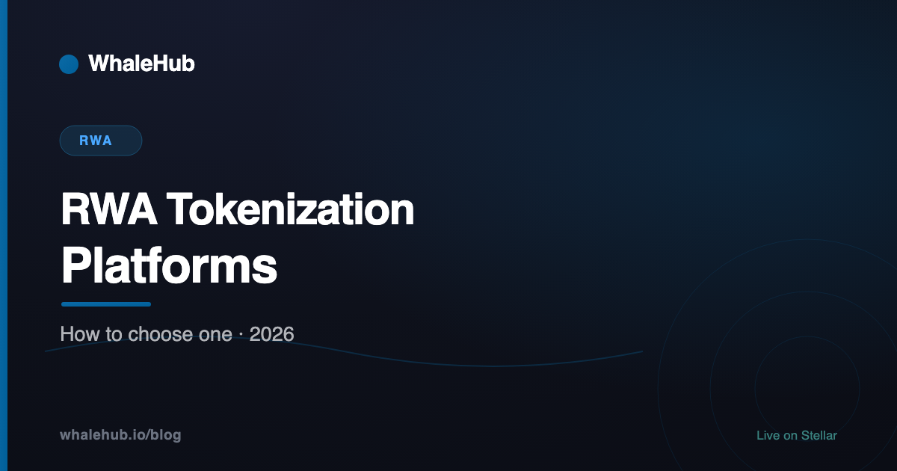

RWA Tokenization Platforms in 2026: How to Choose One

Choosing an RWA tokenization platform is mostly not a technology decision. Every credible provider can mint a compliant token; the differences that matter are custody, transfer agency, who is accountable when something goes wrong, and whether holders have a contractual way out. This is a guide to the questions, not a ranking.
We are not a tokenization platform and have no product in this category. What follows is the evaluation framework we would use, organised around the capabilities that actually differ between providers. Specific vendors change their offerings constantly — the questions age better than any list would.
What a platform has to provide
Six layers. The token contract is the smallest and least differentiated of them; the value is in the five underneath.
| Layer | What it does | Failure if missing |
|---|---|---|
| Legal structure | SPV, trust or fund that owns the asset and issues claims | Token represents nothing enforceable |
| Custody | Holds the actual asset, independently attested | No proof the asset exists |
| Transfer agency | Maintains the legal register of holders | On-chain transfers are not legally recognised |
| Eligibility & KYC | Verifies who may hold, enforces jurisdictional limits | Securities distributed to ineligible holders |
| Valuation / oracle | Publishes NAV or price on-chain | Token cannot be priced or used as collateral |
| Token contract | Mints, transfers, enforces restrictions | The easy part |
A useful heuristic: if a platform's marketing leads with the token contract, it is probably reselling the easy layer and leaving you to assemble the rest.
Three categories of provider
End-to-end issuers
They supply the legal entity, custody relationships, transfer agency and technology as one package. Fastest route to a live product and the highest ongoing cost, and you inherit their jurisdiction and their choices. Suits issuers who want a product, not a project.
Infrastructure providers
They supply the token standards, compliance modules and register software; you bring your own lawyers, custodian and administrator. Cheaper and far more flexible, and it only works if you already have — or are willing to build — the surrounding apparatus. Most failed RWA launches are issuers who bought infrastructure while believing they had bought an issuer.
Chain-native protocols
Protocols that tokenize a specific asset class themselves, usually Treasuries or private credit, and sell shares in their own product rather than a platform. You are buying their fund, not building yours. Simplest for an investor, no help at all for an issuer.
Which chain, and why it matters less than you think
Chain choice is usually presented as the big decision and is rarely the one that determines success. That said, the differences are real:
- Ethereum carries most institutional volume, largely through network effect — the collateral, the venues and the integrations are already there. Costs more per transaction, which is immaterial at institutional ticket sizes and very material at retail ones.
- Stellar is common for payment-adjacent issuance and fund tokenization. Settlement is a few seconds and fractions of a cent, and the asset model carries issuer controls natively — authorisation flags, clawback, trustlines — which map unusually cleanly onto what a regulated issuer is obliged to do. Those controls exist at the protocol level rather than as contract code someone had to write correctly.
- Permissioned chains appear when an institution wants the settlement benefits without a public ledger. They get the speed and lose the composability, which was usually the point.
The honest framing: pick the chain your counterparties and collateral venues already use. Technical merit rarely overcomes an absent ecosystem.
The questions that separate them
- Who is the custodian, and when was the last attestation? A named institution and a dated report, not "assets are held securely".
- Is there a contractual redemption right, or only a secondary market? This single answer separates a fund from a speculation.
- Are transfer restrictions enforced in the contract or by policy? Policy-level restrictions get bypassed. Contract-level ones cannot be.
- Who is the transfer agent? If nobody, on-chain ownership and legal ownership can diverge — and only one of them is enforceable.
- Which jurisdiction governs, and who may hold? Find out before onboarding, not during.
- What does the fee stack total? Structuring, administration, custody, audit and transfer agency stack up, and against a Treasury yield the total decides whether the product makes sense at all.
Identity and eligibility deserve particular attention because they are where tokenized assets diverge most sharply from ordinary crypto — a point we take up in Best KYC platforms for RWA.
The summary
Platforms differ on custody, accountability and exit, not on their ability to mint a token. Work out which of the six layers you are actually buying, get named answers on custody and redemption, and treat the chain as a distribution decision rather than a technical one.
Frequently asked questions
What does an RWA tokenization platform do?
It provides the machinery between a real asset and a token: entity formation or access to an existing one, custody arrangements, transfer agency and the shareholder register, investor onboarding and eligibility checks, the smart contracts that enforce transfer restrictions, and a mechanism for redemption. The token contract itself is the smallest part.
What should I look for when choosing one?
Named custodian and auditor with dated attestations; a contractual redemption path rather than only a secondary market; transfer restrictions enforced at the contract level so compliance cannot be bypassed; a clear jurisdiction; and a pricing source you can identify. Platforms that answer all five quickly are rare and that itself is informative.
Are tokenization platforms regulated?
The platform and the issuance are different things. A platform may be a pure technology provider with no licences, while the issuing entity carries the regulatory obligations, or the platform may hold transfer agent or broker-dealer registrations itself. Ask which, because it determines who is accountable if something breaks.
What does tokenization cost?
Typically a setup cost for structuring and legal work, then ongoing fees for administration, transfer agency, custody and audit, often expressed as basis points on assets under management. The legal and administrative costs usually dominate; the technology is rarely the expensive part, which surprises people.
Can I tokenize an asset without a platform?
You can mint a token representing anything in minutes. What you cannot do alone is make it a legally enforceable claim, keep a compliant register, restrict transfers to eligible holders, or offer redemption. Those are the parts a platform sells, and skipping them produces a token with no basis for value.
Which blockchain do tokenization platforms use?
Ethereum carries most institutional volume for network effect reasons. Stellar is widely used for payment-adjacent and fund tokenization because settlement is fast and cheap and the asset model has built-in issuer controls like authorisation flags and clawback, which map closely onto what regulated issuance requires.
WhaleHub is a yield-optimization protocol on Stellar. We stake AQUA, aggregate ICE voting power, and auto-compound Aquarius rewards for stakers. This series explains the Stellar DeFi stack — and the wider market around it — in plain English.
Read more

Built on Stellar, settled in seconds
WhaleHub runs on Stellar — the same rails much of the tokenized-asset world settles on. Stake AQUA, earn AQUA, stay non-custodial.
Launch the appThis article is for educational and informational purposes only and is general information, not financial, tax, or legal advice. Protocols, platforms and regulations change frequently — verify current details directly before acting. DeFi and tokenized assets involve risk, including the total loss of capital. Do your own research and consult a qualified professional. No platform mentioned paid to appear, and absence from this article is not a judgement.